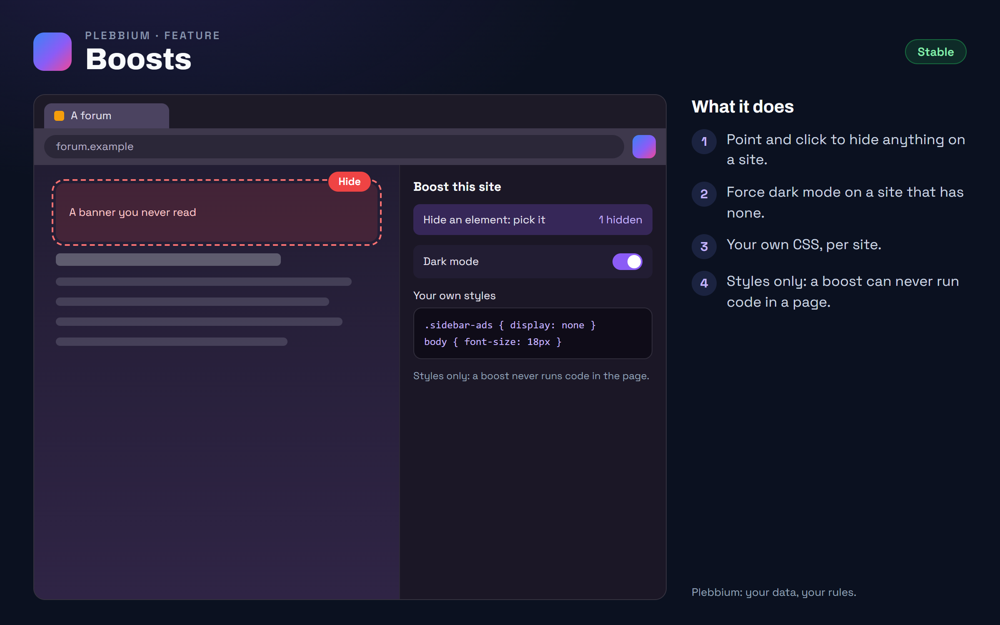

All features › Shipped › Boosts
Boosts
Stablesince 3604Change how a site looks, for that site only: hide elements by pointing and clicking, force dark mode, or write your own styles. Boosts are CSS only, never scripts.

How to use it
- Right-click a page › Boost this site.
- Hide something: pick it on the page; it stays hidden on every visit.
- Dark mode: turn it on for that site.
- Your own styles: write CSS for the site; it applies at once.
When it arrived
156.0.8078.360418 Oct 2026 · Beta and Stable
Boosts.
Why it works this way
CSS only
A boost can hide, restyle or darken a site but never run code in it, so a boost can't be turned against you or the site.
Hiding stays in its lane
A hiding rule that could reach beyond what you picked is refused.